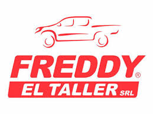

Inicio

Contamos con el personal y la infraestructura necesaria para desarrollar mantenimiento de vehículos livianos y pesados, con atención durante las 24hs los 365 días del año.
De esta manera garantizamos la operatividad y seguridad de los vehículos y equipos, disminuyendo gastos y tiempo fuera de servicio; a través de un serio y responsable mantenimiento preventivo.